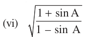

EXERCISE
- 2.Write all the other trigonometric ratios of \(\angle A\) in terms of sec A.
- 3.Choose the correct option. Justify your choice.
- (i)\(9 sec^{2} A - 9 tan^{2} A =\)
- (A)1 (B) 9 (C) 8 (D) 0
- (ii)\((1 +\) tan θ + sec θ) \((1 +\) cot θ - cosec θ) =
- (A)0 (B) 1 (C) 2 (D) \(- 1\)
- (iii)(sec \(A +\) tan A) \((1 -\) sin A) =
- (A)sec A (B) sin A (C) cosec A (D) cos A
- (iv)\(\frac{1+tanA}{1 +cot2A}\) \(^{2} =\)
- (A)\(sec^{2} A\) (B) \(- 1\) (C) \(cot^{2} A\) (D) \(tan^{2} A\)
- 4.Prove the following identities, where the angles involved are acute angles for which the
expressions are defined.
- (i)(cosec θ - cot \(θ)^{2} = \frac{1-cosθ}{1+cosθ}\) (ii) \(\frac{cosA}{1 +sinA}\) \(+ \frac{1+sinA}{cosA} = 2\) sec A
- (iii)\(\frac{tanθ}{1-cotθ} + \frac{cotθ}{1-tanθ} = 1 +\) sec θ cosec θ
[Hint : Write the expression in terms of sin θ and cos θ] \(\frac{1+secA}{secA} = \frac{sinA}{1 - cosA}\) \(^{2}\) [Hint : Simplify LHS and RHS separately] cos \(A -\) sin \(A + 1 =\) cosec \(A +\) cot A, using the identity \(cosec^{2} A = 1 + cot^{2} A\). cos \(A +\) sin \(A - 1\)

= sec \(A +\) tan A (vii) sin θ- \(2 sin^{3}\) θ= tan θ \(2 cos^{3}\) θ- cos θ
- (viii)(sin \(A +\) cosec \(A)^{2}+\) (cos \(A +\) sec \(A)^{2} = 7 + tan^{2} A + cot^{2} A\)
- (ix)(cosec \(A -\) sin A)(sec \(A -\) cos A) \(= \frac{1}{tan A +cotA}\)
[Hint : Simplify LHS and RHS separately]
- (x)\(\frac{1+tanA}{1 +cot2A}\) \(^{2} = \frac{1-tanA}{1 - cotA}\) \(= tan^{2} A\)